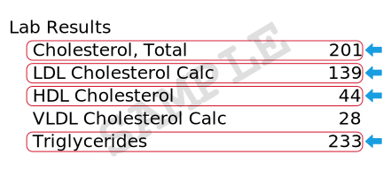

What you need
To complete Part 1, you will need health numbers:

Blood Pressure

Cholesterol Levels
Total Cholesterol, HDL and LDL Cholesterol, Triglycerides.
How to get your cholesterol levels
You can check your recent lab report (from within the past 12 months) or get them from your doctor or patient portal. They will often appear like this.
If you don't have a recent report or a doctor, there are low-cost options that do not require a doctor visit:
- Home-use test kits
- Heart health screenings
- Some pharmacies
- Employer health clinics
If you need assistance with reading your lab report, talk to a doctor or call (317) 705-2187